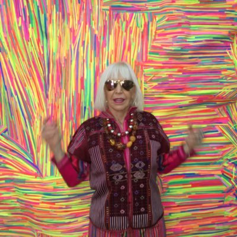

Marta Minujìn
Es una artista plástica argentina, conocida por sus obras vanguardistas producidas principalmente en los años 1960, 1970 y 1980.
Por Romina Monterroza
Historia
Nació el 30 de enero de 1943 en Avellaneda, Buenos Aires. Vivió una infancia que ella misma ha descrito como "horrible". Minujín estudió bellas artes en algunas escuelas nacionales y a pesar de obtener excelentes calificaciones en dibujo, escultura y pintura, no se sentía conforme. Decidió abandonar los estudios debido a que ella estaba interesada en ser una artista de vanguardia y lo que realizaba o le parecía acorde a esa tendencia. A los 16 años presentó su primera exposición individual e inició su breve paso por el informalismo. Ese mismo año, Minujín consiguió una beca en Francia y para enmanciparse falsificó su documento y se casó con el economista Juan Gómez Sabaini. En 1962 regresó a Argentina, pero un año mas tarde vuelve a Paris gracias a otra beca.
Obras
Sus obras, de carácter conceptual, pop, psicodélico y de acción revolucionó las normas sociales preestablecidas y estableció una contracultura. En Paris, se vincula con el nuevo realismo y en 1963 realiza su primer happening, "La destrucción". Para esta obra Marta reúne todas sus piezas elaboradas con colchones, e invita a un grupo de artistas a "destruirlas" creando una obra propia sobre ellas. De vuelta en Buenos Aires, Marta presentó varios happenings, performances e instalaciones artísticas en el instituto Di Tella. Durante fines de los años sesenta se adhirió al movimiento contracultural hippie en Nueva York tras haber ganado la beca Guggenheim, donde se volcó al arte pop y psicodélico. Durante esta época y mas tarde en la década de 1970, trabajó tanto en Buenos Aires como en Nueva York. En 1983 y en celebración del retorno de la democracia en Argentina, Minujín presentó en la avenida 9 de Julio "El partenón de libros", formado con libros prohibidos durante la dictadura militar. Desde los años noventa su trabajo ha sido revalorizado y consagrado en diversos homenages y retrospectivas. Sin embargo, Minujín continua trabajando como artista en su taller en el barrio porteño de San Cristobal. Cuenado en 1998, el Museo de Arte Contemporáneo en Los Ángeles realiza una revisión histórica sobre la incursión de la acción en las artes plásticas, Marta Minujín es ubicada entre los pioneros de estas manifestaciones, junto a Ives Klein y Allan Kaprow.
“Mi mente es una esponja que capta a los argentinos. El arte es salirse de lo establecido, es entrar en la eternidad y la trascendencia”
Marta Minujìn
Mi mente es una esponja que capta a los argentino. El arte es salirse de lo establecido, es entrar en la eternidad y la trascendencia
Marta Minujìn